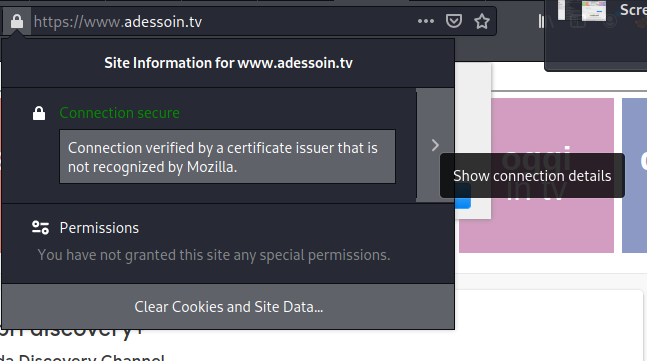
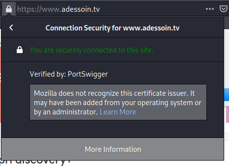
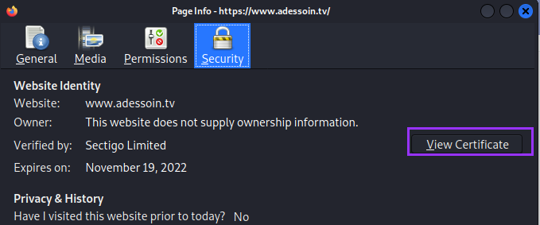

HTTP/SSL (443)
Find hostnames that resolve to this IP address and then add these hostnames to /etc/hosts
nmap --script=ssl-cert.nse 10.50.96.5
nmap -sC -sV -p 443 10.50.96.5
ssl-cert: Subject: commonName=
brainfuck.htb/organizationName=Brainfuck Ltd./stateOrProvinceName=Attica/countryName=GR
Subject Alternative Name: DNS:
www.brainfuck.htb, DNS:
sup3rs3cr3t.brainfuck.htbAdd to /etc/hosts
10.50.96.5 brainfuck.htb www.brainfuck.htb sup3rs3cr3t.brainfuck.htb
Information Gathering
(view the SSL certificate)
1. lock icon >
Show Connection Details.
2. More Information > View Certificate > Details.
  search for emails or domain connected to the ip